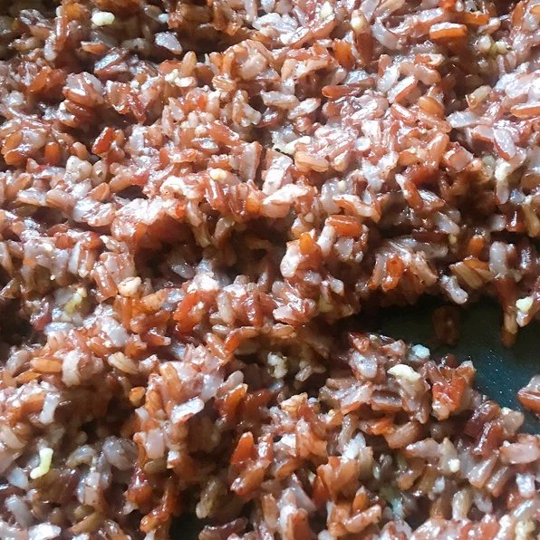

Garlic rice

Description
This is a simple Philippine fried rice bursting with the flavor and aroma of garlic.
Ingredients
- 2 tablespoons vegetable oil
- 1 ½ tablespoons chopped garlic
- 2 tablespoons ground pork
- 4 cups cooked white rice
- 1 ½ teaspoons garlic salt
- ground black pepper to taste
Steps
- Heat the oil in a large skillet over medium-high heat. When the oil is hot, add the garlic and ground pork. Cook and stir until the garlic is golden brown. This is the color you want for maximum flavor, do not allow it to burn, or the flavor will be bitter.
- Stir in the cooked white rice, and season with garlic salt and pepper. Cook and stir until heated through and well blended, about 3 minutes. Serve and enjoy.